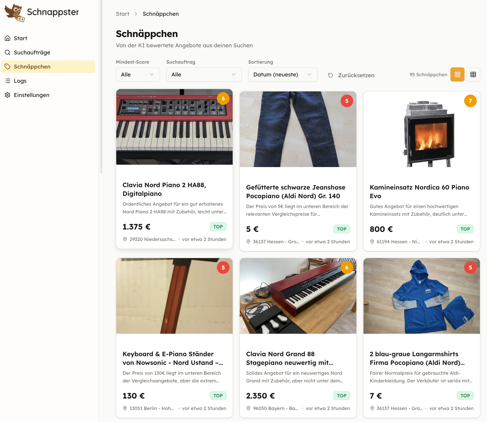

Kleinanzeigen.de Schnäppchen-Finder mit KI

Eine persönliche Web-App, die Kleinanzeigen.de-Suchergebnisse periodisch abruft, mit KI auf Schnäppchen prüft und über die Ergebnisse informiert.
Kurz: Automatischer Schnäppchen-Finder mit KI-Bewertung.
Zwei getrennte Teile — der Browser verbindet sie.
Next.js / React, TypeScript
UI: Listen, Formulare, Dashboard
Wird zu statischem HTML/JS gebaut
Python, FastAPI
API (JSON), Scraping, KI, Datenbank
Ein Prozess: uv run start
Kommunikation: Browser lädt die UI und ruft die API auf (REST/JSON).
uv run startuv run start --devSchichten im Python-Projekt (von außen nach innen)
Scraping und KI-Analyse laufen in getrennten Single-Worker-Queues (kein Überlappen).
Zwei Phasen: ScraperService speichert neue Anzeigen, AIService wertet sie aus.
Für jeden fälligen Suchauftrag (AdSearch):
Eigener Job (Analyzer-Queue, kein Überlappen mit Scrape):
Next.js + React, statisch gebaut, eine klare Struktur.
web/lib/api.ts, Typen in web/lib/types.ts.
web/app/(app)/, gemeinsame Sidebar für die App.
uv run start [--skip-tests] [--dev] [--port PORT] # Server starten
uv run scrape [adsearch_id] # Scraping manuell
uv run analyze [limit] # KI-Auswertung
uv run dbreset # DB löschen und neu anlegen
uv run seed # Beispieldaten einspielen
uv run docs [--open] # Doku bauen (Präsentation, pdoc, …)
uv run help # BefehlsübersichtFragen?